화공기사(구)(구) (2009-05-10 기출문제)
1과목: 화공열역학
1. 비압축성 유체(incompressible fluid)의 성질을 나타내는 식이 아닌 것은?
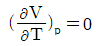
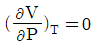
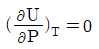
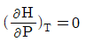
(정답률: 알수없음)

2. 정압열용량 Cp는 7/2R이고 정적열용량 Cv는 5/2R인 1몰의 이상기체가 압력 10bar, 부피 0.⑤m3에서 압력 1bar로 정용과정을 거쳐 변화할 때 기계적인 가역과정으로 가정하면 이 계에 부가된 열량 Q와 이 계가 한 일 W는 각각 얼마인가?
- Q=-11250J, W=0
- Q=-15750J, W=0
- Q=0, W=-11250J
- Q=0, W=-15750J
(정답률: 알수없음)
3. 오토(Otto)엔진관 디절(Diesel)엔진에 대한 설명 중 틀린 것은?
- .디젤 엔진에서는 압축 과정의 마지막에 연료가 주입된다.
- 디젤 엔진의 효율이 높은 이유는 오토 엔진보다 높은 압축비로 운전할 수 있기 때문이다.
- 디젤 엔진의 연소 과정은 압력이 급격히 변화하는 과정 중에 일어난다.
- 오토 엔진의 효울은 압축비가 클수록 좋아진다.
(정답률: 알수없음)
4. 어떤 물질의 부피팽창률은 a/V, 등온압축률은 b/V일 때 이 물질의 상태 방정식은? (단, a,b는 상수이다.)
- V=aT+bP+const.
- V=aT-bP+const.
- V=bT+aP+const.
- V=bT-aP+const.
(정답률: 알수없음)
5. 일정한 T,P에 있는 닫힌계가 평형상태에 도달하는 조건에 해당하는 것은?
- (dGt)T.P=0
- (dGt)T.P＞0
- (dGt)T.P＜0
- (dGt)T.P=1
(정답률: 알수없음)
6. 다음 중 등엔트로피 과정이라고 할 수 있는 것은?
- 가역 단열과정
- 가역과정
- 단열과정
- 비가역 단열과정
(정답률: 알수없음)
7. 1몰의 이상기체에 대하여
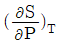
와 같은 값을 가지는 것은? (단, R은 기체상수, Cp는 정압비열이다.)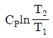
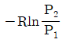
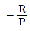
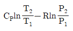
(정답률: 알수없음)
8. 1atm, 25℃에서 물의 등온 압축률 k는 4.5×10-5(atm)-1이다. 25℃등온하에서 물의 밀도를 1%증가시키기 위해서는 약 몇 기압까지 물을 압축시켜야 하는가? (단, 압력변화에 관계없이
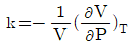
로서 일정 하다.)- 22
- 44
- 222
- 2244
(정답률: 알수없음)
9. 열과 일 사이의 에너지 보존의 원리를 표현한 것은?
- 열역학 제0법칙
- 열역학 제1법칙
- 열역학 제2법칙
- 열역학 제3법칙
(정답률: 알수없음)
10.
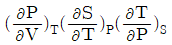
와 동일한 열역학 식은?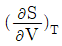
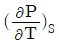
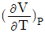
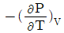
(정답률: 알수없음)
11. 열역학성질 중 부분 몰 성질(partial molar property)
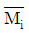
에 해당하지 않는 것은? (단, H는 엔탈피, S는 엔트로피, f는 퓨개시티, r는 활동도계수이다.)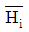
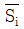
- fi
- RTlnri
(정답률: 알수없음)
12. 단열과정을 나타내는 식이 아닌 것은? (단, r는 비열비이다.)
- TVr-1=constant
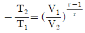
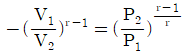
- PVr=constant
(정답률: 알수없음)
13. 어떤 유체가 장치 속으로 1.8km/min의 유속으로 들어 간다. 들어가고 나갈 떄의 그 유체의 운동에너지의 차가 1kcal/kg 이 되려면 유체가 장치를 나갈 때의 속도는 약 몇 km/min 이어야 하는가?
- 5.77
- 6.24
- 9.63
- 11.57
(정답률: 알수없음)
14. 줄-톰슨(Joule-Thomson)계수 μ를 다음과 같이 나타낼 때 이상기체일 경우 μ의 값은?
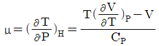
- 1
- 0
- -1
- ∞
(정답률: 알수없음)
15. 등온과정에서 이상기체의 초기 압력이 1atm, 최종압력이 10atm일 때 엔트로피 변화 △S를 옳게 나타낸 것은?
- △S=-R
- △S=-2.303R
- △S=4.606R
- △S=RTln5
(정답률: 알수없음)
16. 엔트로피에 관한 설명 중 틀린 것은?
- 엔트로피는 혼돈도(randomness)를 나타내는 함수이다.
- 융점에서 고체가 액화될 때의 에트로피 변화는
 표시할 수 있다.
표시할 수 있다. - 위치에너지의 감소는 열역학적으로 엔트로피 감소에 대응된다.
- 엔트로피 감소는 질서도(orderliness)의 증가를 의미한다.
(정답률: 알수없음)
17. 카르노 사이클(carnot cycle)에 관한 설명 중 틀린 것은?
- 순환 가역과정이다.
- 등엔트로피 과정은 2개이다.
- 등온과정은 2개이다.
- 등압과정은 2개이다.
(정답률: 알수없음)
18. 다음 반응식과 같이 진공에서 CaCO3가 부분적으로 열분해하여 평형을 이루고 있는 계의 자유도는?
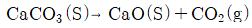
- 0
- 1
- 2
- 3
(정답률: 알수없음)
19. 정압과정으로 액체로부터 증기로 바뀌는 순수한 물질에 대한 깁스 자유에너지 G와 온도 T의 그래프를 옳게 나타낸 것은?
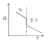
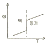
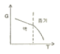
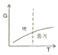
(정답률: 알수없음)
20. 압력 240kPa에서 어떤 액체의 상태량이 Vf는 0.00177m3/kg, VO는 0.1⑤m3/kg, Hf는 181kJ/kg, Hg는 496kJ/kg일 때 이 압력에서의 Ufg는 약 몇 kJ/kg인가? (단, V는 비체적, U는 내부에너지, H는 멘탈피, 하첨자 f는 포화액, g는 건포화증기를 나타내고 Ufg는 Ug-Uf이다.)
- 24.8
- 290.2
- 315.0
- 339.8
(정답률: 알수없음)
2과목: 화학공업양론
21. 20℃에서 물 100g에 녹는 결정 황산나트륨(Na2SO4ㆍ10H2O)은 56.4g이다. 이 온도에서 황산나트륨의 용해도(g Na2SO4/100g H2O)는 약 얼마인가? (단, Na의 원자량23, S의 원자량 32이다.)
- 0.189
- 0.249
- 18.9
- 24.9
(정답률: 알수없음)
22. Lㆍatm와 단위가 같은 것은?
- 힘
- 질량
- 속도
- 에너지
(정답률: 알수없음)
23. 질소에 아세톤이 14.8vol% 포함되어 있다. 20℃, 745mmHg에서 이 혼합물의 상대포화도는 약 몇 % 인가? (단, 20℃에서 아세톤의 포화증기압은 184.8mmHg이다.)
- 73
- 60
- 53
- 40
(정답률: 알수없음)
24. 70℃에서 메탄올의 증기압은 1.14bar이고 에탄올의 증기압은 0.72bar이다. 70℃, 1bar에서 혼합증기와 평형을 이루고 있는 혼합용액 중 메탄올의 몰분율은? (단, 혼합용액은 이상용액으로 간주한다.)
- 0.277
- 0.612
- 0.667
- 0.79
(정답률: 알수없음)
25. 다음 [그림]은 증류장치를 도식한 것이다. 여기서 QC는 Condenser에서 제거된 열량, Qr는 Reboiler에서 가열한 열량, F는 공급량, D는 탑상부 제품량, B는 탑하부 유출량, CP는 각 stream의 평균비열을 의미한다. 이 계의 총괄에너지수지(over all energy balance)계산식을 옳게 표시한 것은?
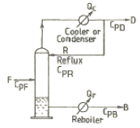
- Qr-QC=F∫CPFdT+D∫CPDdT-B∫CPBdT
- Qr-QC=D∫CPCdT+B∫CPBdT-F∫CPFdT
- Qr-QC=D∫CPDdT+B∫CPBdT-F∫CPFdT
- Qr-QC=F∫CPFdT+D∫CPDdT-F∫CPRdT
(정답률: 알수없음)
26. 20wt% 황산 100kg에 80wt% 황산을 섞어서 50wt%의 황산 수용액을 만들고자 할 때 80wt% 황산의 필요한 양은 몇 kg인가?
- 100
- 120
- 140
- 160
(정답률: 알수없음)
27. 1기압 20℃의 공기가 10L의 용기에 들어있다. 공기 중 산소만 제거하여 전체 체적을 질소만 차지한다면 압력은 약 몇 mmHg가 되는가? (단, 공기는 질소 79%, 산소 21%로 되어 있다.)
- 160
- 510
- 600
- 760
(정답률: 알수없음)
28. Ethylene glycol의 열용량 값이 다음과 같은 온도의 함수일 때, 0℃~100℃ 사이의 온도 범위 내에서 열용량의 평균값은 몇 cal/gㆍ℃인가?
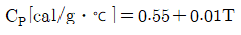
- 0.60
- 0.65
- 0.70
- 0.75
(정답률: 알수없음)
29. NaCl 수용액이 15℃에서 포화되어 있다. 이 용액 1kg을 65℃로 가열하면 약 몇 g의 NaCl을 더 용해시킬 수 있는가? (단, 15℃에서의 용해도는 358g/1000g H2O이고, 65℃에서의 용해도는 373g/1000g H2O 이다.)
- 7.54
- 10.53
- 15.⑤
- 20.3
(정답률: 알수없음)
30. 동일한 부피를 가진 수소와 산소의 무게를 같은 온도에서 측정하였더니 같은 값이었다. 수소의 압력이 2atm이라면 산소의 압력은 몇 atm인가?
- 0.102
- 0.125
- 0.225
- 0.250
(정답률: 알수없음)
31. 40wt%의 수분을 함유한 목재를 수분함량이 10wt%가 되도록 건조하였다면 원목재 1kg당 증발된 물의 양은 약 몇 g 인가?
- 113.3
- 223.3
- 333.3
- 443.3
(정답률: 알수없음)
32. 이상기체에서 단열공정(adiabatic process)에 대한 관계를 옳게 나타낸 것은? (단, K는 비열비이다.)
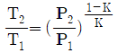
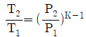
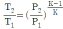
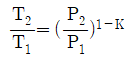
(정답률: 알수없음)
33. 편대수(Semi-log) 용지에 그래프를 그릴 때 직선으로 나타내는 식은?
- y=abx
- y=axn
- y=c+axn
- y=x/(c+ax)
(정답률: 알수없음)
34. 20℃, 730mmHg에서 상대습도가 75인 공기가 있다. 공기의 mol습도는? (단, 20℃에서 물의 증기압은 17.5mmHg이다.
- 0.0012
- 0.0076
- 0.018
- 0.0375
(정답률: 알수없음)
35. 개천의 유량을 측정하기 위하여 dilution method를 사용하였다. 처음 개천물을 분석하였더니 Na2SO4의 농도가 180ppm이있다. 1시간에 걸쳐 Na2SO4 10kg을 혼합한 후 하류에서 Na2SO4를 측정하였떠니 3300ppn이었다. 이 개천물의 유량은 약 몇 kg/h인가?
- 3195
- 3250
- 3345
- 3395
(정답률: 알수없음)
36. 표준상태에서 56m3의 용적을 가진 프로판기체를 완전히 액화하였을 때 얻을 수 있는 액체 프로판은 몇 kg인가?
- 28.6
- 110
- 125
- 246
(정답률: 알수없음)
37. 다음과 같은 일반적인 베르누이의 정리에 적용되는 조건이 아닌 것은?
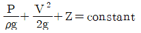
- 직선관에서만의 흐름이다.
- 마찰이 없는 흐름이다.
- 정상 상태의 흐름이다.
- 같은 유선상에 있는 흐름이다.
(정답률: 알수없음)
38. 산소 75vol%와 메탄 25vol%로 구성된 혼합가스의 평균 분자량은?
- 14
- 18
- 28
- 30
(정답률: 알수없음)
39. 순수한 수소와 질소를 고온, 고압에서 다음과 같이 반응시켜서 암모니아를 제조한다. 반응기에서의 수소의 전화율은 10%이고, 수소는 30kmol/s, 질소는 20kmol/s로 도입될 때 반응기에서의 배출되는 질소의 양은 몇 kmol/s인가?
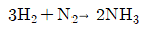
- 19
- 21
- 24
- 27
(정답률: 알수없음)
40. 과잉공기 백분율(%) 계산식을 옳게 나타낸 것은?
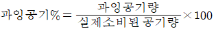
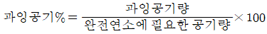
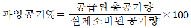
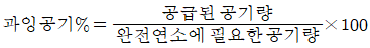
(정답률: 알수없음)
3과목: 단위조작
41. 정류탑에 원액을 500kmol/h로 공급할 때 정류부에서의 증기유량이 40kmol/h라면 환류량은 몇 kmol/h 인가? (단, 환류비는 3 이다.)
- 10
- 20
- 25
- 30
(정답률: 알수없음)
42. 벤젠과 톨루엔의 2 성분계 정류조작에 있어서의 자유도(degrees of freedom)는 얼마인가?
- 0
- 1
- 2
- 3
(정답률: 알수없음)
43. 이중 열교환기의 총괄전열계수가 69kcal/m2ㆍhㆍ℃이고 더운 액체와 찬 액체를 향류로 접촉시켰더니 더운 면의 온도가 65℃에서 25℃로 내려가고 찬 면의 온도가 20℃에서 53℃로 올라갔다. 단위 면적당의 열교환량은 약 몇 kcal/m2ㆍh인가?
- 498.2
- 551.7
- 2415
- 2760
(정답률: 알수없음)
44. 교반기 중 점도가 높은 액체의 경우에는 적합하지 않으나 저정도 액체의 다량 처리에 많이 사용되는 교반기는?
- 프로펠러(propeller)형 교반기
- 리본(ribbon)형 교반기
- 앵커(anchor)형 교반기
- 나선형(screw)g형 교반기
(정답률: 알수없음)
45. 상대휘발도 aAB를 옳게 나타낸 것은? (단, PA, PB는 각 A와 B순수 성분의 증기압, x와 y는 액상, 기상의 몰분율을 나타내고 PA＞PB이다.)
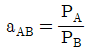
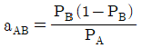
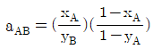
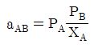
(정답률: 알수없음)
46. 단면이 가로 5cm, 세로 20cm 인 직사각형 관로의 상담 직경은 몇 cm인가?
- 16
- 12
- 8
- 4
(정답률: 알수없음)
47. 다단 증류조작에서 환류비가 증가하는 경우에 대한 설명으로 옳은 것은?
- 정류탑의 단수가 늘어난다.
- 일정한 처리량을 위해서는 정류탑의 지름이 커져야 한다.
- 제품의 순도는 낮아진다.
- 유출액량이 증가한다.
(정답률: 알수없음)
48. 원관 내의 유체흐름에 따른 패닝(Fanning) 마찰계수 f에 대한 설명으로 틀린것은?
- 층류 흐름일 경우 f와 NRe는 반비례한다.
- 층류 흐름일 경우 f는 관 거칠기에 큰 영향을 받지 않는다.
- f는 속도두에 반비례한다.
- 층류 흐름일 경우 난류의 경우 보다 작은 f 값을 갖는다.
(정답률: 알수없음)
49. 증류에 있어서 원료 흐름 중 기화된 증기의 분율을 f라 할 때 f 에 대한 표현 중 틀린 것은?
- 원료가 포화액체일 때 f=0
- 원료가 포화증기일 때 f=1
- 원료가 증기와 액체 혼합물일 때 0＜f＜1
- 원료가 과열증기일 때 f＜1
(정답률: 알수없음)
50. 충전탑의 높이가 2m이고 이론 단수가 5이면 이론단의 상당높이 HETP는 몇 m인가?
- 0.4
- 2.5
- 4
- 10
(정답률: 알수없음)
51. 점도 0.00018poise, 밀도 1.44kg/m3인 유체가 내경 50mm인 관을 평균속도 15m/s로 흐르고 있을 때 레이놀드 수를 구하면?
- 20000
- 40000
- 60000
- 80000
(정답률: 알수없음)
52. 공비혼합물 중 한 성분과 친화력이 크고 비교적 비휘발성인 첨가제를 가해 그 성분의 증기분압을 낮춰 분리시키는 방법은?
- 진공 증류
- 수증기 증류
- 공비 증류
- 추출 증류
(정답률: 알수없음)
53. 전열면적이 1m2인 나무의 평균 열전도도가 100℃에서 0.06W/mㆍ℃이다. 이 나무의 두께가 100mm일 때 100℃에서 열저항(thermal resistance)은 약 몇 ℃/W인가?
- 0.83
- 1.67
- 2.52
- 4.24
(정답률: 알수없음)
54. 공비 혼합물의 성질 중 틀린 것은?
- 보통의 증류방법으로 고순도의 제품을 얻을 수 없다.
- 비점도표에서 글소 또는 극대점을 나타낼 수 있다.
- 상대 휘발도가 1 이다.
- 전압을 변화시켜도 공비 혼합물의 조성과 비점이 변하지 않는다.
(정답률: 알수없음)
55. 정류탑에 공급되는 원료가 찬 액체상태일 때 공급선(feed line)의 기울기 m을 옳게 나타낸 것은?
- 1.0＜m＜∞
- -∞＜m＜0
- m＜0
- 0＜m＜1
(정답률: 알수없음)
56. 다음 그림은 다공성 고체의 건조에 대한 자유분수 X와 건조속도 R의 관계를 나타낸 것이다. 이 그래프에 대한 설명으로 옳지 않은 것은?
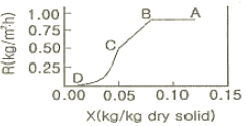
- AB구간에서 고체 내부로부터 표면으로의 물공급이 충분하여, 표면이 물로 충분히 젖어 있다.
- AB구간에서 고체 표면온도는 공기의 건구온도에 접근한다.
- BC구간에서 고체 기공 속의 물은 연속상이다.
- CD구간에서 고체에는 온도구배가 생긴다.
(정답률: 알수없음)
57. 흡수탑의 높이가 18m, 전달단위수 NTU(number of transferunit)가 3일 때 전달단위높이 HTU(height of a transferunit)는 몇 m 인가?
- 54
- 6
- 2
- 1/6
(정답률: 알수없음)
58. 파이프(pipe)와 튜브(tube)에 대한 설명 중 틀린 것은?
- 파이프의 벽두께는 Schedule Number로 표시할 수 있다.
- 튜브의 벽두께는 BWG(birmingham wire gauge)번호로 표시할 수 있다.
- 동일한 외경에서 Schedule Number 가 클수록 벽두께가 두껍다.
- 동일한 외경에서 BWG가 클수록 벽두께가 크다.
(정답률: 알수없음)
59. 다음 중 프라우드 수(Froude number)에 해당하는 것은? (단, g는 중력가속도, v는 속도, L은 길이이다.)
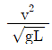
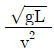
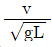
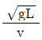
(정답률: 알수없음)
60. 5m/s의 평균유속으로 내경 3cm관을 흐르는 물이 내경이 6cm로 확대된관을 흐를 때 급격한 확대에 의한 손실은 약 몇 kgfㆍm/kg인가?
- 0.19
- 0.32
- 0.72
- 1.43
(정답률: 알수없음)
4과목: 반응공학
61. 단면적이 A, 길이가 L인 파이프 내에 평균속도를 U로 유체가 흐르고 있다. 입구 유체온도와 출구 유체온도 사이의 전달함수는? (단, 파이프는 단열되어 파이프로부터 유체로 열전달은 없다.)
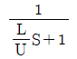
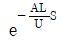
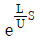
(정답률: 알수없음)
62. 다음 제어에 관한 설명 중 옳은 것은?
- 폐의 동특성은 공정의 동특성에 의해 결정되며 제어기의 조율에는 무관하다.
- 적분공정의 경우는 비례제어기만으로도 설정점 변화를 오프셋없이 따라 갈 수 있다.
- 폐루프의 안정성은 제어기의 조율에 관계없이 공정에 의해서 이미 결정된다.
- 시간지연이 있는 일차공정의 경우 제어기 이득 크기에 관계없이 폐루프는 안정하다.
(정답률: 알수없음)
63. 제어계의 특성방정식의 근(극점)이 양의 실수값을 가질 때 시스템이 나타내는 특성으로 옳은 것은?
- 시스템은 안정하며, 응답은 진동하면서 감소한다.
- 시스템은 불안정하며, 응답은 진동하면서 증가한다.
- 시스템은 안정하며, 응답은 기하급수적으로 감소한다.
- 시스템은 불안정하며, 응답은 기하급수적으로 증가한다.
(정답률: 알수없음)
64. 다음 중 1차계의 시간상수에 대한 설명이 아닌 것은?
- 시간의 단위를 갖는 계의 특정상수이다.
- 그 계의 용량과 저항의 곱과 같은 값을 갖는다.
- 직선관계로 나타나는 입력함수와 출력함수 사이의 비례상수이다.
- 단위계단 변화시 최종치의 63%에 도달하는데 소요되는 시간과 같다.
(정답률: 알수없음)
65. 함수 의 라플라스 변환은?
(정답률: 알수없음)
66. 다음 중 cascade제어에 관한 설명으로 옳은 것은?
- 직접 측정되지 않는 외란에 대한 대처에 효과적일 수 없다.
- Slave루프는 master루프에 비해 느린 동특성을 가져야 한다.
- 외란이 master루프에 영향을 주기 전에 slave루프가 외란을 미리 제거할 수 있다.
- Slave루프를 재튜닝해도 master루프를 재튜닝할 필요는 없다.
(정답률: 알수없음)
67. coshωt의 Laplace변환은?
(정답률: 알수없음)
68. 다음 중 Bernoulli의 법칙을 이용한 head-type 차압유량계는?
- Corriolos flowmeter
- Hot-wire anemometer
- Pitot tube
- Vortex shedder
(정답률: 알수없음)
69. 다음 전달함수를 갖는 계 중 sin응답에서 Phase lead를 나타내는 것은?
- e-τs
- 1+τs
(정답률: 알수없음)
70. 변환기(transducer)의 변화폭(span)을 늘리고 밸브의 크기를 줄였을 경우 제어성능을 유지하기 위해서 제어기 이득을 어떻게 재조정해야 하는지 옳게 설명한 것은?
- 크게 조정한다.
- 작게 조정한다.
- 변화폭과 밸브 크기 변화에 무관하므로 그냥 놔둔다.
- 변화폭과 밸브 크기 변화에 영향이 서로 상쇄되므로 그냥 나둔다.
(정답률: 알수없음)
71. 그림과 같은 액위계(liquid level system)에서 단면적은 3ft2, qo=8√hft3/min 이고 평균 조작수위 h=4ft일 때 시상수(time constant)는 얼마인가?
- 4/9min
- (3√3)/4min
- 3/4min
- 3/2min
(정답률: 알수없음)
72. 공정유체 10m3를 담고 있는 완전혼합이 일어나는 탱크에 성분 A를 포함한 공정유체가 1m3/h로 유입되며 또한 동일한 유량으로 배출되고 있다. 공정유체와 함께 유입되는 성분 A의 농도가 1시간을 주기로 평균치를 중심으로 진폭 0.3mol/L 진동하며 변한다고 할 때 배출되는 A의 농도변화의 진폭은 약 몇 mol/L 인가?
- 0.5
- 0.⑤
- 0.0⑤
- 0.00⑤
(정답률: 알수없음)
73. 시간지연의 크기가 τ인 순수한 시간지연 공정의 전달 함수는?
(정답률: 알수없음)
74. 어떤 1차계의 전달함수는 1/(2S+1)로 주어진다. 크기 1, 지속시간 1인 펄스입력변수가 도입되었을 때 출력은? (단, 정상상태에서의 입력과 출력은 모두 0 이다.)
- 1-e-t/2-{1-e-(t-1)/2}u(t-1)
- 1-e-(t-1)/2u(t-1)
- 1-te-t/2u(t-1)
- 1-{e-t/2+e-(t-1)/2}u(t-1)
(정답률: 알수없음)
75. X1에서 X2로의 전달함수와 X2에서 X3로의 전달함수가 각각 다음과 같이 표현될 때 X1에서 X3로의 전달함수는?
(정답률: 알수없음)
76. 다음 입력과 출력의 그림에서 나타내는 것은? (단, L은 이동거리[cm]이고 V는 이동속도[cm/s]이다.)
- CR회로의 동작응답
- 용수철계의 응답
- 데드타임의 공정응답
- 적분요소의 계단상 응답
(정답률: 알수없음)
77. 다음 미분방정식을 라플라스 변환시키면?
(정답률: 알수없음)
78. 그림과 같은 닫힌루프계에서 입력 R에 대한 출력 Y의 전달함수는?
(정답률: 알수없음)
79. 다음 전달함수로 표현된 공정의 위상각은?
- tan-1(3ω)
- tan-1(-3ω)
- -1(-3ω)+ω
- -1(-3ω)-ω
(정답률: 알수없음)
80. 다음 제어기 중 편차(offset)를 일으키지 않는 것은?
- 비례 - 미분 제어기
- on - off 제어기
- 비례 - 적분 제어기
- 비례 제어기
(정답률: 알수없음)
5과목: 공정제어
81. 질산제조방법 중 상압법과 가압법에 대한 설명으로 옳은 것은?
- 상압법에 비교하여 가압법은 산화율이 떨어진다.
- 가압법은 산화 및 흡수탑의 용적이 매우 커서 시설비가 높다.
- 가압법은 생성된 질산의 농도가 상압법보다 낮다.
- Frank-caro process는 가압법에 해당한다.
(정답률: 알수없음)
82. 석유계 아세탈렌의 제조법이 아닌 것은?
- 아크 분해법
- 부분 연소법
- 저온 분유법
- 수증기 분해법
(정답률: 알수없음)
83. 염화비닐 수지를 성형가공시 가열에 의한 유동성을 향상 시키기 위하여 사용하는 것은?
- 안정제
- 가소제
- 정촉매
- 부촉매
(정답률: 알수없음)
84. 다음 중 테레프탈산 합성을 위한 원료로 이용되지 않는 것은?
- p-자일렌
- 톨루엔
- 벤젠
- 무수프탈산
(정답률: 알수없음)
85. 다음 중 복합비료에 대한 설명으로 틀린 것은?
- 비료 3요소 중 2종 이상을 하나의 화합물 상태로 함유하도록 만든 비료를 화성비료라 한다.
- 화성비료는 비효성분의 총량에 따라서 저농도과 고농도 화성비료로 구분할 수 있다.
- 배합비료는 주로 산성과 염기성의 혼합을 사용하는 것이 좋다.
- 질소, 인산 또는 칼륨을 포함하는 단일비료를 2종 이상 혼합하여 2성분 이상의 비료요소를 조정해서 만든 비료를 배합비료라 한다.
(정답률: 알수없음)
86. 다음 중 증기압이 최저가 되는 황산의 농도는?
- 97.2%
- 98.3%
- 99.8%
- 100%
(정답률: 알수없음)
87. 다음 중 염기성 비료로서 산성토양의 개량 및 잡초, 해충, 병원균의 구제에도 사용되는 비료는?
- Urea
- NH4Cl
- CaCN2
- (NH4)SO4
(정답률: 알수없음)
88. 다음과 같은 반응으로 하루 4ton의 염소가스를 생산하는 공장이 있다. 이 공장에서 하루동안 얻어지는 NaOH의 양은 약 몇 ton인가? (단, 나트륨의 원자량은 23이고, CI의 원자량은 35.5이다.)
- 4.5
- 7.8
- 9.0
- 14.3
(정답률: 알수없음)
89. 1000ppm의 처리제를 사용하여 반도체 폐수 1000m3/day를 처리하고자 할 때 하루에 필요한 처리제는 몇 kg 인가?
- 1
- 10
- 100
- 1000
(정답률: 알수없음)
90. 석유화학 공정 중 전화(conversion)와 정제로 구분할 때 전화공정에 해당하지 않는 것은?
- 분해(cracking)
- 알킬화(alkylation)
- 스위트닝(swwtening)
- 개질(reforming)
(정답률: 10%)
91. 황산제조에서 연실의 주된 작용이 아닌 것은?
- 반응열을 발산시킨다.
- 생성된 산무의 응축을 위한 표면을 부여한다.
- Glover 탑에서 나오는 가스의 혼합과 SO2를 산화시키기 위하여 시간과 공간을 부여한다.
- 가스 중의 질소산화물을 H2SO4에 흡수시켜 회수하여 황질황산을 공급한다.
(정답률: 알수없음)
92. 접촉식 황산제조에 있어 사용하는 바나듐 계동의 촉매를 사용할 경우 전화기 내의 온도 범위를 옳게 나타낸 것은?
- 100~200℃
- 200~300℃
- 400~600℃
- 600~800℃
(정답률: 알수없음)
93. 아디프산과 헥사메틸렌디아민을 원료로 하여 제조되는 물질은?
- 나일론 6
- 나일론 66
- 나일론 11
- 나일론 12
(정답률: 알수없음)
94. 황산 용액의 포화조에 암모니아 가스를 주입하여 황산암모늄을 제조할 때 85wt%황산 1000kg을 포화조에서 암모니아 가스와 반응시키면 약 몇 kg의 황산암모늄 결정이 석출되겠는가? (단, 반응온도에서 황산암모늄 용해도는 97.5g/100gㆍH2O이며, 수분의 증발 및 분리공정 중 손실은 없다.)
- 788.7
- 895.7
- 998.7
- 1095.7
(정답률: 알수없음)
95. 원유를 증류할 때 상압증류공정의 탑저에서 나오는 전사유(Reduced Crude)나 감압증류공정에서 나오는 유분을 경유유분과 함께 제품규격에 맞게 배합한 것은?
- 나프다
- 등유
- 중유
- 아스팔트
(정답률: 알수없음)
96. 벤젠을 니트로화하여 니트로벤젠을 만들 때에 대한 설명으로 옳지 않은 것은?
- HNO3과 H2SO4의 혼산을 사용하여 니트로화 한다.
- NO+2이 공격하는 친전자적 치환반응이다.
- 발열반응이다.
- D, V, S의 값은 7이 가장 적합하다.
(정답률: 알수없음)
97. 황산 존재하에서 C2H5OH에 KBr을 작용시키면 생성되는 주 생성물은?
- CH3-O-CH3
- C2H5OBr
- C2H5Br
- CH3CHO
(정답률: 알수없음)
98. 부식전류가 크게 되는 원인으로 가장 거리가 먼 것은?
- 용존 산소농도가 낮을 때
- 온도가 높을 때
- 금속이 전도성이 큰 전해액과 접촉하고 있을 때
- 금속표면의 내부응력의 차가 클 때
(정답률: 알수없음)
99. 다음 중 밭농사를 주로 하는 지역에서는 사용되나 흡습성이 강하고 논농사에는 부적합한 비료로서 Fauser법으로 생산하는 것은?
- NH4Cl
- NH4NO3
- NH2CONH2
- (NH4)2SO4
(정답률: 알수없음)
100. 아세틸렌을 원료로 하여 합성되지 않는 물질은?
- 아세트알데히드
- 염화비닐
- 메틸알코올
- 아세트산 비닐
(정답률: 알수없음)
6과목: 화학공업개론
101. 다음은 단열 조작선의 그림이다. 조작선을 기울기는 로 나타내는데 이 기울기가 큰 경우에는 어떤 형태의 반응기가 가장 좋겠는가? (단, CP는 열용량, △Hr은 반응열을 나타낸다.)
- 플러그 흐름
- 혼합 흐름
- 교반형
- 회분식
(정답률: 알수없음)
102. 다음 Arrhenius식에 대한 설명으로 옳지 않은 것은?
- A는 지수 앞자리인자 또는 빈도인자이다.
- 활성화에너지의 단위는 J/mol 또는 cal/mol이다.
- e-E/RT는 반응이 일어나기에 충분한 최소에너지 E를 가지는 분자들 사이의 충돌분율을 나타낸다.
- 활성화에너지 E는 전환이 된 후 분자들이 가져야 하는 최소에너지이다.
(정답률: 알수없음)
103. 비가역 1차 액상반응 A→R이 플러그흐름 반응기에서 전화율이 50%로 반응된다. 동일조건에서 반응기의 크기만 2배로 하면 전화율은 몇 %가 되는가?
- 67
- 70
- 75
- 100
(정답률: 알수없음)
104. 회분식반응기에서 A→R, A→R, -rR=3C0.5Amol/Lㆍh, CAD=1mol/L의 반응이 일어날 때 1시간 후의 전화율은?
- 0
- 1/2
- 2/3
- 1
(정답률: 알수없음)
1⑤. 불균일 촉매반응에서 확산이 반응율속영역에 있는지를 알기 위한 식과 관계없는 것은?
- Thiele modulus
- Weisz-Prater식
- Mears식
- Langmuir-Hishelwood식
(정답률: 알수없음)
106. 어떤 반응에서 1/CA을 시간 t로 플롯하여 기울기 1인 직선을 얻었다. 이 반응의 속도식은?
- -rA=CA
- -rA=2CA
- -rA=C2A
- -rA=2C2A
(정답률: 알수없음)
107. 0차 반응의 반응물 농도와 시간과의 관계를 옳게 나타낸 것은?
(정답률: 알수없음)
108. 같은 조건에서 반응온도를 10℃에서 20℃로 올렸을 때 반응속도가 3배로 되었다. 이 때의 활성화에너지는 약 몇 kcal/mol인가?
- 11.44
- 18.18
- 20.43
- 35.62
(정답률: 알수없음)
109. 반응차수 n이 1보다 큰 경우 이상 반응기의 가장 효과적인 배열 순서는? (단, 플러그흐름 반응기와 작은 혼합흐름 반응기의 부피는 같다.)
- 플러그흐름 반응기 → 큰 혼합흐름 반응기 → 작은 혼합흐름 반응기
- 큰 혼합흐름 반응기 → 작은 혼합흐름 반응기 → 플러그흐름 반응기
- 플러그흐름 반응기 → 작은 혼합흐름 반응기 → 큰 혼합흐름 반응기
- 작은 혼합흐름 반응기 → 플러그흐름 반응기 → 큰 혼합흐름 반응기
(정답률: 알수없음)
110. 정용 회분식 반응기에서 단분자형 0차 비가역 반응에서의 반응이 지속되는 시간 t의 범위는? (단, CAO는 A성분의 초기농도, k는 속도상수를 나타낸다.)
(정답률: 알수없음)
111. 다음 중 불균일 촉매반응(heterogeneous catalytic reaction)의 단계가 아닌 것은?
- 생성물의 탈착과 확산
- 반응물의 물질전달
- 촉매표면에 반응물의 흡착
- 촉매표면에 구조변화
(정답률: 알수없음)
112. 기체반응 2A→R+S를 1atm, 100℃등온하의 회분식 반응기에서 반응시킨 결과, 20%의 inert gas를 포함한 반응물 A의 90%를 반응시키는데 5분이 걸렸다. 동일 조성의 반응물을 1atm, 100℃ 하에서 운전되는 플러그 흐름 반응기에 100mol/h로 공급하여 90%의 전화율을 얻고자 한다면 반응기 체적은 약 몇 L로 해야 하는가?
- 255
- 319
- 3100
- 4220
(정답률: 알수없음)
113. 다음과 같은 반응에서 최초 혼합물인 반응물 A가 25%, B가 25%인 것에 불활성기체가 50% 혼합되었다고 한다. 반응이 완결되었을 때 용적변화율 εA는 얼마인가?
- 0.125
- -0.25
- 0.5
- 0.875
(정답률: 알수없음)
114. 다음 각 그림의 빗금친 부분의 넓이 가운데 플러그 반응기의 공간시간 τp를 나타내는 것은? (단, 밀도 변화가 없는 반응이다.)
(정답률: 알수없음)
115. 다음 반응에서 체적팽창률(fratrional change in volume, εA의 값은?
- -1/2
- 0
- 1/2
- 1
(정답률: 알수없음)
116. 그림과 같은 반응물과 생성물의 에너지 상태가 주어졌을 때 반응열 관계로 옳은 것은?
- 발열반응이며, 발열량은 20cal 이다.
- 발열반응이며, 발열량은 50cal 이다.
- 흡열반응이며, 흡열량은 20cal 이다.
- 흡열반응이며, 흡열량은 50cal 이다.
(정답률: 알수없음)
117. 어떤 이상기체가 600℃에서 다음 반응식과 같은 2차 반응이 일어날 때 반응속도상수 kc값은 70[Lㆍmol-1ㆍs-1]이었다고 하면 반응물 A분압의 감소속도[atmㆍs-1]를 반응속도로 할 때 반응속도 상수는 약 몇 atm-1ㆍmin-1인가?
- 58.67
- 68.67
- 78.67
- 88.67
(정답률: 알수없음)
118. 성분 A의 비가역 반응에 대한 연속교반탱크반응기의 설계식으로 옳은 것은? (단, NA는 A성분의 몰수, V는 반응기 부피, t는 시간, FAO는 초기 유입 A의 몰유량, FA는 출구 A의 몰유량, rA는 반응속도이다.)
(정답률: 알수없음)
119. 효소반응에 의해 생체 내 단백질을 합성할 때에 대한 설명 중 틀린 것은?
- 실온에서 효소반응의 선택성은 일반적인 반응과 비교해서 높다.
- Michaelis-Menten식이 사용될 수 있다.
- 효소반응은 시간에 대해 일정한 속도로 진행된다.
- 효소와 기질은 반응 효소-기질 복합체를 형성한다.
(정답률: 알수없음)
120. 어떤 단일 성분 물질의 분해반응은 1차 반응으로 99%까지 분해하는데 6646초가 소요되었다면 30%까지 분해하는데는 약 몇 초가 소요되는가?
- 515
- 540
- 720
- 813
(정답률: 알수없음)